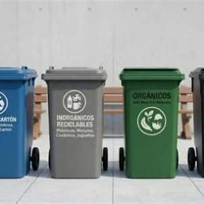

Reciclar es volver a usar materiales para hacer cosas nuevas. Así se produce menos basura y se cuidan los recursos naturales. Lo primero es separar la basura.
| Tipo de basura | Ejemplos |
|---|---|
| Orgánica | Cáscaras y restos de comida |
| Inorgánica | Plástico, vidrio y latas |
| Papel y cartón | Cuadernos y cajas |